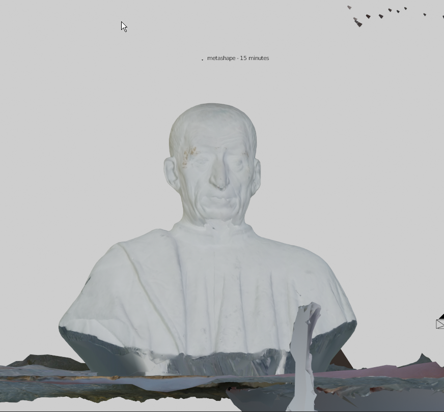
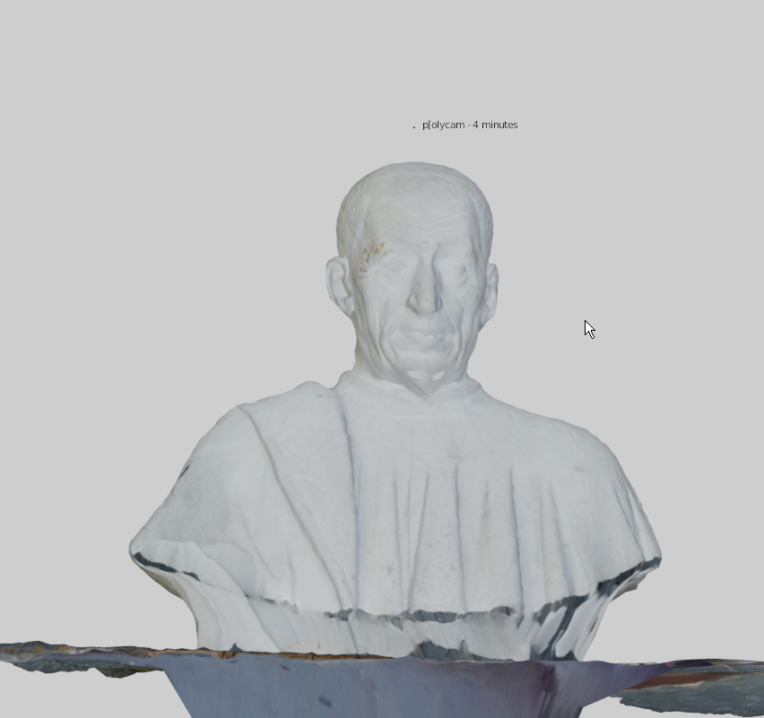
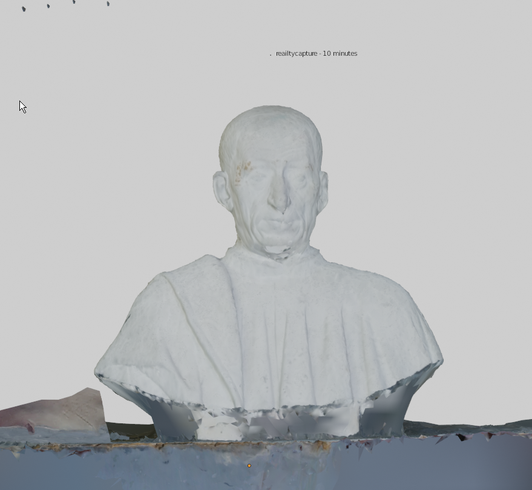

making input for photogrammetry
Photogrammetry is the act of obtaining reliable information about physical objects and the environment through the process of recording, measuring and interpreting photographic images. [*]
- techniques
- -no harsh close-ups
- -diffuse light
- -lots of tracking points
- -avoid reflection
- -no movable objects in frame
- Every tool that outputs an image covering a subject can be hacked to generate photogrammetry results
- ways of capturing
- -drone footage [e.g. ]
- -dslr images/video [e.g. ]
- -infrared camera (termal camera) [e.g. ]
- -a photogrammetry studio [e.g. ]
- -every medium that outputs an image can be used...
extract frames from model
- why are we using video instead of photography?
- positives
- speeeeed. it is faster to produce a video and extract the frames afterwards, than to shoot hundreds of individual images.
- negatives
- artefacts such as automatic exposure, or motion blur might occur.but the speed outweighs the negatives.
- we can extract frames from videos in multiple ways. here I propose 2 methods.
- ffmpeg is a command line tool used to decode, encode, transcode, mux, demux, stream, filter and play audio and video files. IN order to download ffmpeg, make sure python is already installed on your system.installation happens through a terminal.
- installation
- $ pip install ffmpeg (Windows)
- $ sudo apt install ffmpeg (unix)
- $ $ brew install ffmpeg (MacOS)
- extract frames
- $ ffmpeg -i "input.mp4" -vf fps=3/1 "out-%05d.jpg"
- videotutorial here
Make 3d model from images
- Add Photos
- Align Photos
- build dense cloud
- build mesh
- build texture
- export model & texture
- videotutorial here
- ffmpeg is a command line tool used to decode, encode, transcode, mux, demux, stream, filter and play audio and video files. IN order to download ffmpeg, make sure python is already installed on your system.installation happens through a terminal.
- workflow>inputs
- Alignment>Align images
- reconstruction>normal detail
- reconstruction>texture
- reconstruction>mesh
- videotutorial here
- workflow>inputs
- Alignment>Align images
- reconstruction>normal detail
- reconstruction>texture
- reconstruction>mesh
- videotutorial here
  
- install, copy files to directory, double click registration.reg here
- add images, align images, (create dense pointcloud), generate mesh, export
- install camera_wobble addon
- append a shader and animate camera.
- render a sequence with eevee
- extract pointcloud
- example data extraction from mesh here
- 2d-3d scraping step by step
- room reconstruction with fSpy and blender